Teleprinters for the Radio Amateur
by Alan G Hobbs, G8GOJ — reprinted by permission via Larry Rice VK6CP, 25 August 1999
There are many different types of mechanical teleprinter which become available on the surplus market from time to time, but we will only concern ourselves with the ones which are most liable to be encountered. The teleprinters that we will be considering come from three manufacturers: Creed & Company of England, the Teletype Corporation of the U.S.A., and Siemens of Germany.
There are three fundamental requirements which must be considered before purchasing a machine:
- The electrical signaling characteristics.
- The code that the machine uses.
- The signaling speed at which the machine operates.
Signaling Characteristics
Machines manufactured in the U.K. normally use what is known as Double Current or Polar signaling, in which the two signaling states, Mark and Space, are represented by current flowing in opposite directions, often +/−20mA, with Mark being represented by a negative current flow. Whereas machines manufactured in the U.S.A. and Germany normally use what is known as Single Current or Neutral signaling, in which the two signaling states, Mark and Space, are represented by the presence or absence of current, often 60mA, the actual polarity being unimportant.
Note that we are referring to current flow in each case, and not to voltages. The receiving section of a teleprinter usually consists of a form of electro-mechanical relay, often called the electro-magnet, with a fairly high inductance, perhaps up to 4 Henrys, and a low DC resistance, perhaps only 200 Ohms, which responds to the incoming signaling impulses. The actual voltage developed across the receiving electro-magnet is quite small, perhaps only 4 volts, but in order to reduce the time constant of the signaling circuit, which is represented by the total circuit inductance divided by the total circuit resistance, and thereby increase the speed of operation of the electro-magnet, the circuit resistance must be increased to the maximum practicable, which is best served by a current source and not a voltage source.
In the real world voltage sources are more convenient to generate than current sources, but a current source can be simulated by using a fairly high voltage and a series resistor. When the resistance is increased to reduce the time constant, the driving voltage must also be increased in order to maintain the required current through the electro-magnet. For historical reasons the voltages usually used are +/−80 volts for Polar signaling, and 120 volts for Neutral signaling, but the precise values are not too important. However, for Polar signaling, it is important that the positive and negative supplies are balanced, otherwise distortion will be introduced.
What all this means in practice is that a machine designed for Polar signaling will not work in a circuit designed for Neutral signaling, and vice-versa. Designs for Terminal Units are available which are suitable for either type of signaling, and the Terminal Unit configuration required should be checked very carefully before any teleprinter is purchased. Having said that, some of the Creed machines can be adjusted to operate in Neutral circuits by means of auxiliary springs, or other means, but the parts required may not be fitted on individual machines, and this should be checked if single current operation is required.
The transmitter output of a double current machine consists of a single pole changeover contact which operates in sympathy with the transmitted code, the two poles representing Mark and Space respectively. Whereas the transmitter output of a single current machine consists of a normally closed contact which opens for the duration of the Space impulses.
In addition to this transmitter contact, the Creed machines usually have a second single pole changeover contact known as the Send-Receive switch. This contact operates just before the Start impulse of the character is transmitted, and restores just after the end of the Stop impulse has been transmitted. In the case of punched paper tape readers the contact remains operated for as long as characters are being transmitted, and restores after the end of the last character has been transmitted.
All of the contacts mentioned above are fitted with radio interference suppression networks, usually consisting of resistance, inductance and capacitance which are suitable for the normal signaling voltages and currents involved in teleprinter signaling.
Machine Coding
There are several codes in use for communications purposes, with the standard five unit code being the International Telegraph Alphabet number 2 (ITA2). Other five unit codes which may be found are: the Murray code, which has some similarities with ITA2 and is partially compatible with it; Elliott 403, Stantec Zebra, and Ferranti Pegasus which are all early computer codes dating from the 1960s and are of no practical purpose to the Radio Amateur; and the Baudot code which dates from the late 1800s and was never used for teleprinters as we now know them. The only Baudot equipment that I know of is in the London Science Museum, and the now closed BT Museum in London. Needless to say, none will be found on the Amateur surplus market! When people refer to Murray and Baudot code they invariably mean ITA2, because they do not appreciate the differences between the codes.
There is no certain way of checking the code of every machine which may be found without actually seeing it in operation. A simple way, which is usually a good guide, is to carefully inspect the keyboard. The layout of the characters should be very similar to that of a standard typewriter keyboard, and as long as there are no strange characters, the machine may well be coded for ITA2. However, even this is not guaranteed as machines which use the Elliott 403 computer code have a very similar keyboard layout to a machine coded for ITA2.
In addition to five unit codes, there are also codes with seven units which are primarily used for data communications, rather than plain language communications. The main code which may be encountered is the American Standard Code for Information Interchange (ASCII) which is now in fairly universal use.
In addition to the five information units in the code, the machine requires a START unit and a STOP unit or units. In order for the machine to re-synchronise at the start of every character, the STOP unit is usually made 1.5 units long, or in the case of machines from the U.S.A. 1.42 units long. This is why teleprinter codes in general, and ITA2 in particular, is sometimes referred to as a 7.5 unit code. The corresponding machine receive cycle is usually 6.5 units, which allows the machine to cope with transmit cycles of less than 7.5 units, and significant speed errors.
Standard Radio Teletype (RTTY) communications use the ITA2 code; any other code is usually considered under the umbrella term of data. Machines will only be able to talk to each other if they use the same code, and it would be extremely difficult to change the coding of a machine after it is purchased. Indeed, it would be easier to throw it away and look for another machine!
Signalling Speed
There are a number of speeds in use on the Amateur bands, but the main ones are:
- 45.45 Bauds, which is the original domestic speed of the U.S.A., and the speed at which most Amateur RTTY operation takes place.
- 50 Bauds, which is the international standard speed for the public Telex service, and may sometimes be found on the Amateur VHF/UHF bands.
- 75 Bauds, which is a common commercial communications speed on private networks connected together by land-lines.
- 110 Bauds, which is the standard speed for data machines using the ASCII code.
Before considering speeds in greater detail, perhaps a few words about the “Baud” would be appropriate. The Baud is the unit of signaling speed, and is named after Emile Baudot who was an eminent French telegraphic engineer of the late 1800s, and who also devised the now obsolete Baudot code. The signaling speed in Bauds may be defined as “the reciprocal of the shortest signaling element in seconds.” Therefore, a system operating at 50 Bauds will have a signal element time period equal to 1 second divided by 50 — that is, 20 ms. This is most important, because machines will only be able to talk to each other if they both have the same Baud rate.
Knowing the number of units in the code, and the Baud rate at which it is transmitted, allows us to calculate the signaling speed in words per minute. For this calculation it is always assumed that a word consists of five letters plus a space, that is a total of six letter intervals.
Therefore, at 50 Bauds, and using the ITA2 code with a 1.5 unit Stop bit:
Each letter lasts for: 7.5 × 20 = 150 ms
Therefore, one word lasts for: 6 × 150 = 900 ms
Therefore, the number of words transmitted in one minute is: 60 ÷ 0.9 = 66.67 wpm
This is usually abbreviated to 66 words per minute. By the same reasoning, a transmission at 45.45 Bauds is equivalent to 60.6 words per minute (60 words per minute, or 60 speed), and a transmission at 75 Bauds is equivalent to 100 words per minute.
Most machines use an electric motor to derive all of the internal machine timing, and it is the speed of this motor which sets the Baud rate for the machine. Motors may be governed, if they are to be run from DC supplies, or synchronous, if there is a stable AC mains source available.
A governed motor driving a machine at 50 Bauds can usually be adjusted for 45.45 Bauds, and vice-versa, but a motor driving a machine operating at 75 Bauds cannot be adjusted to operate at 45.45 or 50 Bauds because the change in speed is just too great. In order to check the motor speed, stroboscopic markings are normally provided on the motor governor case. These markings are used in conjunction with a special tuning fork which has small shutters attached to the tines. When the motor speed is correct, the markings on the governor will appear stationary when viewed through the shutters. In practice, the motor speed is normally set so that it is running very slightly fast when idling, and very slightly slow when on full load. Under average operating conditions the motor speed will then be just right. The stroboscopic tuning forks are sometimes found at rallies, and may also be obtained through the advertisement columns of Datacom, and other Amateur radio magazines.
When synchronous motors are fitted it is necessary to replace some of the internal gears if it is required to operate the machine at different speeds, because the signaling speed is directly related to the AC mains frequency. Gears were normally produced for the three common speeds of 45.45/50/75 Bauds, but if they have to be specially manufactured they can turn out to be very expensive. Another solution which has successfully been used is to start the machine on 50 Hz AC mains, and then automatically changeover to the output from a 45.45 Hz power oscillator. Some machines may be found which are fitted with a manually operated dual speed gear box, usually for 45.45/50 Bauds or 50/75 Bauds. Intending purchasers should always check the speed at which the machine is operating, and what will be required to change the speed on that particular machine, should it be necessary.
Summary
To summarize the items above, to be of much use in Amateur circles a teleprinter must:
- Use a signaling system which suits the terminal unit with which it is to be used. The BARTG ST5 series of terminal units, with the exception of the ST5C, provide a double current output. However, it is possible to convert the ST5 to provide a single current output.
- Use the ITA2 code. (Not Murray which is now rather rare, or one of the early computer codes, or Baudot which will never be found.)
- Be able to operate at least at 45.45 Bauds, and ideally at 45.45 and 50 Bauds. Operation at 75 Bauds would be a bonus.
Having covered the basic requirements for teleprinters, we may now look in detail at the individual machines which have been available on the surplus market.
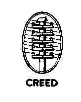
Creed Machines
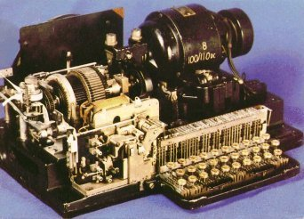
3X This is a teleprinter which prints on narrow (3/8″ wide) gummed paper tape, and was introduced in 1927 for the Post Office Telegram service. The standard signaling speed was 49 Bauds using the Murray code and not ITA2, although some ITA2 coded machines were later produced. The ITA2 coded machines may be identified by the letters A or B in place of the X in the description, and a different keyboard layout. It is possible to interwork between machines coded for Murray code and ITA2, provided that care is taken. A governed motor is fitted as standard, which may be adjusted to operate at 45.45 or 50 Bauds.
6S This is a punched paper tape reader, with reference numbers from the original 6S introduced in 1926, to the latest model the 6S/6 introduced in 1958. Some of these tape readers were allocated the Post Office reference numbers of: “Automatic Transmitter No. 1B” (the 6S/3), “Automatic Transmitter No. 2D” (the 6S/5), “Automatic Transmitter No. 2E” (the 6S/5M), and “Automatic Transmitter No. 2F” (the 6S/6M). The output from a tape reader is a single changeover contact of exactly the same form as a teleprinter keyboard. The early machines used a governed motor operating at 3000 rpm, whilst the later machines from the 6S/3 onwards used a governed motor operating at 1500 rpm. All of these machines are suitable for operation at 45.45 or 50 Bauds. Some versions of the 6S/6 may be found with a manually operated dual speed gearbox giving the choice of 50 or 75 Bauds. The 6S/5 and 6S/6 were also available with an electromagnetic clutch on the tape drive, which is signified by the suffix “M.” The clutch requires 50 volts DC at 20 mA to operate, and allows for remote tape control. As these machines also contain tape sensing contacts, the clutch may be wired in series with the sensing contacts to automatically stop transmission at the end of the tape. The 6S/6 and 6S/6M have an adjustable width tape gate in order to accept the wider 7/8″ wide tape used on the model 86 printing reperforator.
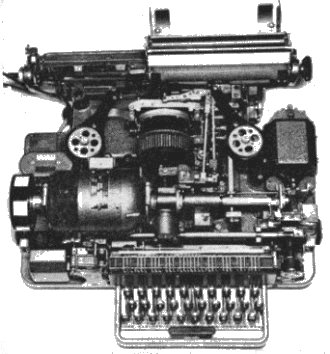
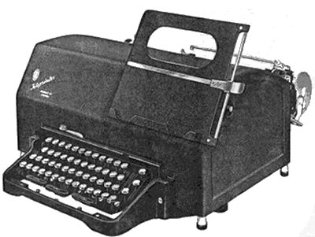
7 This is probably the most famous of the Creed page printing teleprinters, and was introduced in 1931 for the new Telex service. Like the model 3X it originally used the Murray code, but very rapidly changed to the standard ITA2 code. Over 150,000 model 7s were manufactured before production ceased in the late 1960s. The machine could be fitted with interchangeable platen assemblies for either: Friction feed paper, Sprocket feed paper, or 3/8″ wide paper tape. Many variants were also manufactured as the machine was developed, and these may be identified by various suffixes after the 7. These will be described later, as some of the suffixes are common to other machines. This machine was usually fitted with a 3000 rpm governed motor for operation at 50 Bauds, which is adjustable for operation at 45.45 Bauds. Motors were produced for DC voltage ranges of 24 volts to 220 volts, and for AC voltage ranges of 110 volts to 230 volts. Some machines were fitted with a 3000 rpm synchronous motor for operation at 50 Bauds, and are not directly suitable for operation at 45.45 Bauds without an external AC mains supply running at 45.45 Hz, or some other form of electronic speed conversion. This machine was allocated the Post Office reference number “Teleprinter No. 7.”
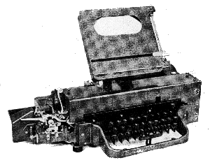
7P This is an off-line keyboard perforator, introduced in 1934, whose sole function is to produce punched paper tape directly from the keyboard input. It may be found with either 1500 rpm governed or 1450 rpm induction motors. The punch mechanism is capable of working at up to 140 words per minute, so the speed of operation is entirely dependent upon the skill of the keyboard operator. A character counter is often fitted so that the carriage return and line feed characters may be inserted at the appropriate part of the text. This is essential if the contents of the tape are to be printed on a standard page teleprinter. This machine was allocated the Post Office reference number “Perforator No. 45.”
7TR This is a non-printing tape reperforator, introduced in 1931, which uses a number of assemblies which are common to the model 7 teleprinter. The signal input circuit is electrically identical to a model 7 teleprinter, and the same range of motors may be encountered. The later model 7TR/3 punches two tapes simultaneously. This machine was allocated the Post Office reference number “Reperforator No. 2.”
8 This is the receive only version of the model 7 teleprinter and, hence, is not fitted with a keyboard. It is otherwise identical to the model 7.
25 This is a high speed non-printing tape reperforator, introduced in 1955, which operates from a parallel drive at a speed of up to 33 characters per second. The speed of operation is independent of the motor speed, and is determined by the parallel drive circuitry. This machine was usually fitted with a 1500 rpm induction motor operating from 50 Hz AC mains, but 3000 rpm governed motors for DC supplies may sometimes be found. It was designed for use with some of the early electronic computers, and may be found in versions for 5, 6, 7, or 8 unit tape, and with drive voltages from 12 volts to 100 volts DC. It is not normally used for communications purposes, but with suitable drive electronics it can be put to good use.
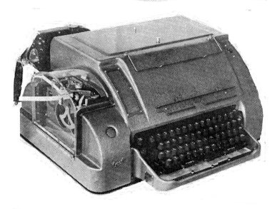
35 This is a high speed paper tape reader operating at a speed of up to 40 characters per second, in either direction, with a parallel output. The speed of operation is independent of the motor speed, and is determined by the control circuitry. This machine was usually fitted with a 1500 rpm induction motor operating from 50 Hz AC mains. It was designed for use with some of the early electronic computers, and may be found in versions for 5, 6, 7, or 8 unit tape, and with drive voltages from 12 volts to 100 volts DC. It is not normally used for communications purposes, but with suitable drive electronics it can be put to good use.
47 Like the model 3, this teleprinter also prints on a 3/8″ wide gummed paper tape for the Post Office Telegram service, and was introduced in 1947 to replace the ageing model 3. The component parts have many similarities with the model 7, from which it was developed. Like the model 7, a governed motor was normally fitted. This machine was allocated the Post Office reference number “Teleprinter No. 11.”
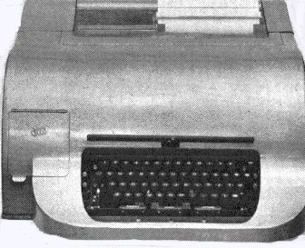
54 This page printing teleprinter was introduced in 1954 as a stop-gap measure pending the development of a totally new teleprinter (the model 75), and is really only an advanced model 7E in an all-enclosing silence cover. This makes it a very nice machine to operate. Like the model 7 a governed motor was usually fitted, although some synchronous motors may be found. A tape punch, operated from the receive mechanism, is often fitted as standard within the silencing cover. This machine was used as a print-out device for some of the early electronic computers, and may be found coded for some of the early computer codes.
67 This is a combination of the model 7P keyboard perforator and the model 6S punched tape reader, which was introduced in 1934. This permits a tape to be punched, and transmitted directly to line. A governed motor operating at 1500 rpm is normally fitted, which will permit operation at 45.45 and 50 Bauds. It would be unusual to find a complete model 67, the majority of which had the transmitter head removed so that the machine reverted to a standard 7P keyboard perforator.
71 This is a multiple head punched tape reader with three independent message transmitting heads which was introduced in 1951. It is based on an American design and provides a single current output, not the standard changeover contact found in other Creed machines. It was usually used in message relay stations so that two other messages could be loaded whilst the first was being transmitted. A governed motor is normally fitted, which will permit operation at 45.45 or 50 Bauds. As a tape reader it is physically rather large. This machine was allocated the Post Office reference number “Automatic Transmitter No. 3.”
72 This is a multiple head punched tape reader with three independent number transmitting heads to identify the messages being sent by the model 71 tape reader. In all other respects it is very similar to the model 71. This machine was allocated the Post Office reference number “Automatic Transmitter No. 4.”
74 This is a multiple head punched tape reader and is a combination of the models 71 and 72, providing one number transmitting head and two message transmitting heads. In all other respects it is very similar to the model 71. This machine was allocated the Post Office reference number “Automatic Transmitter No. 5.”
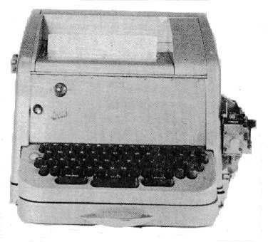
75 When this page printing teleprinter was introduced in 1958, it was the smallest, lightest, fastest, and most versatile machine in the world. It utilised a stationary paper platen, and a cylindrical type head which was driven by a complicated arrangement of levers positioned in response to the received code. The machine uses one main cam shaft for the transmit and receive functions, and provides the local copy by internal mechanical means. When used with the BARTG ST5 terminal unit a very minor wiring change is necessary to take account of this mechanical local record. It will operate at 45.45, 50 or 75 Bauds, and may be found with a dual speed gear box for 45.45 and 50 Bauds, or 50 and 75 Bauds. If the gear box is not fitted two gears will need to be replaced to change the operating speed of the machine. The standard motor fitted was a governed motor operating at 4200 rpm, but some machines were fitted with 3000 rpm synchronous motors for 50 Hz supplies, or 3600 rpm motors for 60 Hz supplies. As would be expected, the gears for the different types of motors are completely different and are not interchangeable. The various gears for the governed and 3000 rpm synchronous motors, which have colour coding spots by which they may be identified, are sometimes seen at rallies, but the gears for the 3600 rpm motors are extremely rare. Factory fitted options included a paper tape reader and/or tape punch, automatic carriage return/line feed, dual colour printing, and a choice of three or four row keyboards. The model 75 could also be supplied as a receive only machine, which could also be fitted with an answer back unit and the associated transmitter contacts. This machine may also be found coded for some of the early computer codes, or with a solenoid operated parallel drive mechanism and parallel output contacts. This parallel drive version may usually be identified by the 25 way Plessey mark 4 signal connector on the rear of the machine. A modified version of this machine, which utilised a remote keyboard for use on the Telex cordless switchboards, was allocated the Post Office reference number “Teleprinter No. 12.”
85 This is a printing reperforator, introduced in 1948, similar to the model 7 page printing teleprinter, but fitted with a perforating unit in place of the paper platen. The perforator is designed to produce “chadless” tape, which means that the holes in the tape are not punched cleanly, but the chads are still attached to the tape by means of a small flap. The text is then printed directly on top of the tape. This style of tape may be read by any of the standard range of punched tape readers. The same range of motors as fitted to the model 7 are also fitted to this machine. This machine was allocated the Post Office reference number “Printing Reperforator No. 1.” The receive only version of this machine, the model 85R, was allocated the Post Office reference number “Printing Reperforator No. 2.”
86 This is a printing reperforator, similar in most respects to the model 85, but using 7/8″ wide tape instead of the standard 11/16″ wide tape, and printing the text below the clean punched holes. This tape may be read using the 6S/6 series of tape readers, which are fitted with an adjustable width tape gate. The same range of motors as fitted to the model 7 are also fitted to this machine. This machine was allocated the Post Office reference number “Printing Reperforator No. 1D.” The receive only version of this machine, the model 86R, was allocated the Post Office reference number “Printing Reperforator No. 2D.”
92 This is an electromagnetically operated punched paper tape reader, introduced in 1957, which operates at speeds up to 20 characters per second with a parallel output. It was designed for use with some of the early electronic computers, and may be found in versions for 5, 6, 7 or 8 unit tape, with drive voltages from 12 volts to 100 volts DC. It is not generally used for communications purposes but with suitable drive electronics it can be put to good use. The mark 1 and mark 2 versions caused very high tape wear, which was corrected in the mark 3 version by redesigning the tape sensing mechanism.
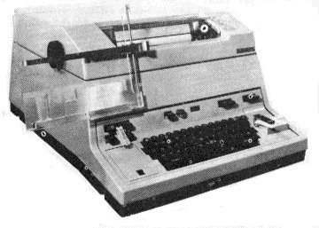
444 This page printing teleprinter was introduced in 1966 to replace the ageing model 7 in the Telex and private wire services. It was designed to operate continuously at 75 Bauds, and was only provided with gears for 50 and 75 Bauds. It was usually fitted with a 3000 rpm synchronous motor for 50 Hz AC supplies, but a few machines fitted with 3750 rpm governed motors may be found. Machines for export were sometimes fitted with 3600 rpm synchronous motors for 60 Hz AC supplies, but these are now extremely rare. A replacement 45.45 Baud gear for 50 Baud machines fitted with the 3000 rpm synchronous motor was available from BARTG some years ago, but the stocks have long since been used up, and there are no plans to produce any more. This machine is often fitted with a built-in tape punch, a paper tape reader, dual colour printing, and a “stunt box” for character recognition. It is a very nice machine to operate and, due to its all-enclosing cover, is very quiet in operation. This machine was allocated the Post Office reference number “Teleprinter No. 15.”
750 This page printing teleprinter is a very rare development of the model 75, and uses separate transmit and receive camshafts in a similar manner to other Creed teleprinters. Visually, it is slightly larger than the model 75 in order to accommodate the two camshafts. Very little information is available for this machine, and any intending purchaser should ask for a demonstration of the machine in operation.
2300 This semi-electronic page printing teleprinter, introduced in 1974, was intended as a general replacement for the entirely mechanical model 444 in the Telex and private wire services. However, due to the variety of options available, it eventually became uneconomic to manufacture, and was overtaken by the emerging electronic teleprinters. The timing is crystal controlled, and was normally adjustable for 50, 75 and 100 Bauds. By changing the crystal, operation at 45.45 Bauds is possible. The electronic section contains a number of non-standard integrated circuits and, if a serious problem develops, it may prove very difficult to cure. The machine was normally fitted with a 3000 rpm synchronous motor to drive the rotating print head. Characters were printed “on the fly” by a type hammer located behind the paper, without stopping the actual rotation of the print head. This machine was allocated the Post Office reference number “Teleprinter No. 23.”
Creed Machine Suffixes
A Normally means that the machine transmits a 7.5 unit character and receives in a 7.0 unit cycle; 66 wpm at 50 Bauds. This was the early transmit and receive configuration, and is not often encountered.
A When applied to the Post Office versions of the model 70 series of tape readers it indicates that the transmitter is configured for a 7.42 unit character.
ASR Automatic Send Receive. A machine fitted with a tape punch and tape reader. Often used with the model 444 teleprinter.
B Normally means that the machine transmits a 7.5 unit character and receives in a 6.5 unit cycle; 66 wpm at 50 Bauds. This is the standard transmit and receive configuration.
B When applied to the Post Office versions of the model 70 series of tape readers it indicates that the transmitter is configured for a 7.5 unit character.
C Normally means that the machine transmits a 7.0 unit character and receives in a 6.5 unit cycle; 71.4 wpm at 50 Bauds. This was mainly used on private wire circuits.
C When applied to the Post Office versions of the model 70 series of tape readers it indicates that the transmitter is configured for a 7.0 unit character.
CTK Commercial Typewriter Keyboard. This was used on the model 7 series of machines so that an ordinary typist could use a teleprinter without any special training. It is very complex mechanically, and uses mechanical character storage to automatically insert the figures and letter shift signals, but is very easy to use.
D Normally applied to the model 7 teleprinter to indicate that the machine has been modified for the Telex service, and that it is fitted with motor on-speed contacts, an improved answer back unit, and a 33 way signals plug. The machine still transmits a 7.5 unit character and receives in a 6.5 unit cycle; 66 wpm at 50 Bauds.
D When applied to the standard versions of the model 70 series of tape readers it indicates that the transmitter is configured for a 7.42 unit character.
E Normally applied to a model 7 teleprinter to indicate that the machine is fitted with the later overlap cam unit. This cam unit consists of three separate cam shafts, and allows characters to be printed as soon as they are received, rather than being printed when the next character is received as in the earlier versions of the model 7. This cam unit is fitted as standard to the model 54 teleprinter.
K3 The three row keyboard used on the model 75 teleprinter.
K4 The four row keyboard used on the model 75 teleprinter.
KSR Keyboard Send Receive. A machine not fitted with either a tape punch or tape reader. Often used with the model 444 teleprinter.
M Fitted with an electro-magnetic clutch. Applied to the model 6S series of tape readers only.
M3 The three row keyboard used on the earlier model 7 series of machines. Rather heavy in operation, but very reliable.
N3 The three row keyboard used on the later model 7, 47 and 54 series of machines. A very nice keyboard.
N4 The four row keyboard used on the later model 7, 47 and 54 series of machines. A very nice keyboard.
P Fitted with a punched tape perforating attachment which is directly operated by the action of the keyboard.
PR Printing Reperforator. A machine which produces punched paper tape directly from the received signal, and prints the text between the feed holes. Applied to the model 75 teleprinter only.
R Receive only version of a machine. That is, no keyboard or transmitting mechanism is fitted.
RO Receive Only version of a machine. That is, no keyboard or transmitting mechanism is fitted. Often used with the model 444 teleprinter.
RP Fitted with a punched tape reperforating attachment which is operated directly by the received signal.
T Fitted with a mechanical punched tape reader operating via the keyboard transmitting mechanism. Applied to the model 75 teleprinter only.
Siemens Machines
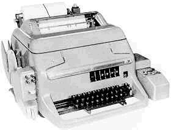
T100 This is a purely mechanical page printing teleprinter which, by changing gears, is capable of operation at 45.45, 50 or 75 Bauds. A 3000 rpm synchronous motor, or a 3750 rpm governed motor may be fitted. In a similar manner to the Creed model 75, the gears are not interchangeable between the two types of motor. The machine is designed for single current operation only, and may be fitted with a punched tape reader and a tape punch. Some of the models, which were intended for private wire use, may be found fitted with an internal signaling supply and an all-enclosing silencing cover similar to the Creed model 444 teleprinter.
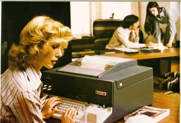
T150 This is a semi-electronic page printing teleprinter, with an electronic keyboard, operating at 50, 75 or 100 Bauds. The machine is powered by a 1400 rpm induction motor, but the timing is crystal controlled, and the machine is capable of operation at 45.45 Bauds by changing the crystal. As with the T100, the T150 is designed for single current operation only, and may be fitted with a punched tape reader and a tape punch. Internal signaling supplies are not usually fitted to this machine.
Teletype Machines
Note: “Teletype” is a registered trade mark of the Teletype Corporation, and may only be used to describe equipment manufactured by that company.
14 A number of different machines were given this designation, including: a tape printing teleprinter (similar to the Creed model 47), a chadless printing reperforator (similar to the Creed model 85), and non-printing reperforator (similar to the Creed model 7TR). All of these machines normally operated at 45.45 Bauds, and were fitted with either a governed motor or a synchronous motor for a 60 Hz mains supply, all of which operated at 115 volts. Gears for the 60 Hz synchronous motors operating on 50 Hz are very difficult to find.
14TD This is a punched paper tape reader providing a single current output. The transmitter does not use a changeover contact, as in the Creed machines, but uses a segmented distributor and rotating brush gear to generate the output signal, hence the name: “Transmitter Distributor.” This machine normally operated at 45.45 Bauds, and was fitted with either a governed motor or a synchronous motor for a 60 Hz mains supply, all of which operated at 115 volts. Gears for the 60 Hz synchronous motors operating on 50 Hz are very difficult to find. Some machines may be found with many smaller segments in the distributor. These were intended for cryptographic use. Whilst conversion for normal communications use is possible, it is hardly worth the effort.
15 This was the standard page printing teleprinter, using a stationary platen and a moving type basket and in its day was probably the most widely used teleprinter by Radio Amateurs throughout the world. This machine normally operated at 45.45 Bauds, and was fitted with either a governed motor or a synchronous motor for a 60 Hz mains supply, all of which operated at 115 volts. Gears for the 60 Hz synchronous motors operating on 50 Hz are very difficult to find. Receive only versions were also produced without the keyboard and transmitter mechanism. This teleprinter was also manufactured under licence in Germany by Lorenz, and was known as the LO15. It has metric threads, but is broadly identical to the standard TT15 in all other respects.
19 This is a composite set, and comprises a model 15 page printing teleprinter with a built-in keyboard perforator and a model 14TD punched tape reader, all mounted on a special table which also contained the necessary power supplies. A character counter was normally fitted to the perforator so that the carriage return and line feed characters could be inserted at the appropriate point, thereby producing a tape which would be suitable for reception on a page printer, whilst the model 15 was otherwise engaged printing an incoming message from line.
26 This is a small, lightweight, page printing teleprinter, with a stationary paper platen and rotating type head, similar in some respects to the Creed model 75 teleprinter. However, it is not capable of continuous service, and spares for the worn out parts are very difficult to obtain.
28 This is a heavy duty page printing teleprinter which was designed for operation at 45.45, 50 or 75 Bauds, and was fitted with governed or synchronous motors operating from 115 volts 60 Hz. This machine was available as ASR or KSR versions, and with many options, including: automatic carriage return/line feed, a two or three speed gear box, and a built-in “stunt box” for character recognition. Several different tape readers and tape punches could be fitted depending upon the final requirements. The model 28 is a very fine machine indeed.
32 This is a modern page printing teleprinter, also available as receive only, ASR or KSR. It may be desk top mounted or supplied on a floor pedestal. It was designed as a light duty low cost machine.
33 This is the ASCII version of the model 32, to which it is very similar in all other respects. This machine was very popular in the early days of home computing as a printout device, a function for which it was also used in the commercial field. It was manufactured for single current signalling and the low voltage RS232 signalling system. RS232 machines may usually be identified by the fitting of a 25 way “D” series plug. The machine may also be found under the name of the Data Dynamics model 390, which is the Teletype model 33 chassis in a larger enclosure, with built-in power supplies, a paper tape punch and a paper tape reader.
34 This is a modern page printing teleprinter, also available as receive only, ASR or KSR. It may be desk top mounted or supplied on a floor pedestal. It was designed as a heavy duty machine, and incorporated a “stunt box” similar to the model 28.
35 This is the ASCII version of the model 34, to which it is very similar in all other respects.
Signalling Connections
Due to the wide variety of equipment which may be encountered, only the standard connections to the Creed machines, which are the ones most likely to be encountered, will be considered.
The standard signalling connector for the majority of Creed machines is the 12 pin Multicon (miniature Jones), with the male plug connected to the machine. An additional connector, the Plessey mark 4 circular connector, was also used on the model 75 series of machines so that the power and signalling leads could be disconnected. The pin designations for the 12 way Plessey mark 4 signal connector are given in the (.) brackets. Some early Creed machines used a large 9 pin, round pin, plug for the signals connections. The pin designations for this 9 pin plug are given in the [.] brackets.
Pin No. — Function
- (A) [6] Mark contact
- (B) [7] Tongue — Note 1
- (C) [8] Space contact
- (D) [9] Receive contact
- (E) [2] Tongue
- (F) [1] Send contact
- (G) [5] Receive electro-magnet — Note 2
- (H) No connection
- (J) [3] Receive electro-magnet
- (K) [4] Bell contact — Note 3
- (L) Bell and Who Are You Contacts — Note 4
- (M) Who Are You contact — Note 5
Notes:
- On the 444 teleprinter, link pin 12 to pin 13 on the 50 way connector; the other connections remain the same.
- For “Mark,” current should flow into pin 7 and out of pin 9.
- This contact closes when the “Bell” character, figures shift J, is received.
- This pin may be bonded to the machine chassis.
- This contact closes when the “Who Are You” character, figures shift D, is received. If the machine is fitted with an Answer Back unit, a 20 character message will also be transmitted to line.
- For punched tape readers, only pins 1 to 6 inclusive apply.
Useful References
General
- Five Unit Codes — Datacom, Winter 1998, pp 28–35
- Stroboscope Tuning Forks — BARTG Newsletter, July 1982, pp 48–49
- Creed & Company — The First 50 Years — Datacom, Summer 1997, pp 8–20
- Teleprinter Handbook (1st Edition) — Goacher and Denny, RSGB 1973
- Teleprinter Handbook (2nd Edition) — Hobbs, Yeomanson and Gee, RSGB 1983
Creed Model 3 Teleprinter
- Converting the Creed Type 3 Printers to Print like the 7B (ITA2) — BARTG Newsletter No. 38, pp 8–10
Creed Model 6S Automatic Transmitters
- Creed 6S Series Automatic Transmitters — BARTG Newsletter No. 69, September 1976, pp 20–21
- Creed 6S6 Automatic Transmitters — BARTG Newsletter No. 68, June 1976, p 8
- 6S6M Wiring — BARTG Newsletter No. 60, June 1974, p 13
Creed Model 7 Teleprinter
- 7B Make and Break — BARTG Newsletter No. 43, April 1970, pp 9–10
- 7B Make and Break — BARTG Newsletter No. 44, pp 5–14
- 7B Make and Break — BARTG Newsletter No. 61, September 1974, pp 12–16
- 7B Make and Break — BARTG Newsletter No. 62, December 1974, pp 10–11
- Teleprinter 7B Standard Adjustments — BARTG Newsletter No. 48, pp 16–18
- Model 7 and 54 Page Teleprinters (part 1) — BARTG Newsletter No. 59, pp 9–12
- Model 7 and 54 Page Teleprinters (part 2) — BARTG Newsletter No. 60, June 1974, pp 3–6
- Creed 7B 12 Pin Plug Wiring — BARTG Newsletter No. 45, September 1970, p 25
- A Switched Two Speed Governor — BARTG Newsletter, Summer 1966, pp 4–5
- A Simple Way to Make a 7B Governor Dual Speed — BARTG Newsletter No. 50, pp 20–21
- A Teleprinter Motor Speed Control Device — BARTG Newsletter No. 65, September 1975, pp 19–25
- Automatic CR/LF for the Creed 7B — BARTG Newsletter No. 60, June 1974, p 14
- Automatic CR and LF for the Creed 7 and 54 Printers — BARTG Newsletter No. 70, December 1976, pp 18–18
- 7B/RP Reperforator — BARTG Newsletter No. 46, December 1970, pp 7–10
- Thoughts on the Answer Back Drum — BARTG Newsletter No. 71, March 1977, pp 5–6
- Answer Back Ward Chart for Teleprinters 7 and 47 — BARTG Newsletter No. 72, June 1977, p 20
- The Creed CTK Keyboard — BARTG Newsletter No. 68, June 1976, pp 6–8
- N3 Keyboard — BARTG Newsletter No. 43, April 1970, pp 11–17
Creed Model 54 Teleprinter
- Model 7 and 54 Page Teleprinters (part 1) — BARTG Newsletter No. 59, pp 9–12
- Model 7 and 54 Page Teleprinters (part 2) — BARTG Newsletter No. 60, June 1974, pp 3–6
- Model 54 Starter Switch Control — BARTG Newsletter No. 62, December 1974, pp 11–12
- Automatic CR and LF for the Creed 7 and 54 Printers — BARTG Newsletter No. 70, December 1976, pp 18–18
Creed Model 75 Teleprinter
- The Creed Model 75 Teleprinter (part 1) — Datacom, Autumn 1997, pp 5–9
- The Creed Model 75 Teleprinter (part 2) — Datacom, Winter 1997, pp 8–11
- Creed Model 75 Identification — BARTG Newsletter, March 1979, p 21
- Notes on the Creed 75 for Amateur Use — BARTG Newsletter No. 53, September 1972, pp 20–25
- Creed Model 75 Motors and Gears — BARTG Newsletter, December 1978, pp 15–16
- Creed Model 75 Timing Disc — BARTG Newsletter, June 1980, pp 15–16
Creed Model 444 Teleprinter
- Introduction to the Creed 444 — BARTG Newsletter, Summer 1983, pp 16–20
- The Creed 444 Teleprinter — Datacom, Autumn 1995, pp 69–70
- ITT Creed Model 444 Teleprinter (part 1) — Datacom, Spring 1999, pp 28–37
- Maintaining the Creed 444 — BARTG Newsletter, Spring 1983, pp 6–11
- Lubrication Instructions for the Creed 444 — Datacom, Winter 1988, pp 73–84
- The Creed 444 on 45 Bauds — BARTG Newsletter, Winter 1983, pp 8–10
- The G3RED Teleprinter Synchronous Motor Speed Control — BARTG Newsletter No. 72, June 1977, pp 21–26
- Coding the Porcupine — BARTG Newsletter, December 1982, pp 12–13
- More on the 444 Answer Back — Datacom, Spring 1984, p 19
- Creed 444 WRU Disable on Receive — Datacom, Summer 1985, pp 64–65
- Using the Bell Contacts on the Creed 444 — BARTG Newsletter, Summer 1983, pp 24–25
- The Creed 444 End of Line Lamp — Datacom, Winter 1984, pp 33–34
Creed Model 2300 Teleprinter
- The Creed 2300 (part 1) — Datacom, Spring 1984, pp 16–18
- The Creed 2300 (part 2) — Datacom, Summer 1984, pp 20–23
- The Creed 2300 (part 3) — Datacom, Autumn 1984, pp 14–16
- The Creed 2300 — Datacom, Spring 1988, pp 41–50
- Connecting the Creed 2300 to the ST5MC — Datacom, Winter 1986, p 30
Teletype 14 Series
- The Story of a Teletype 14 Transmitter Distributor — BARTG Newsletter, May 1965, pp 4–6
- Using Cryptographic Transmitter Distributors — BARTG Newsletter, Winter 1966/67, pp 4–5
Teletype Model 15 Teleprinter
- Speed Indicator and Controller for the Teletype Model 15 — BARTG Newsletter No. 42, September 1969, pp 12–20
Teletype Model 33 Teleprinter
- The Data Dynamics 390 Printer — Datacom, Winter 1995, pp 25–33
Copyright © 2011 George Hutchison W7TTY & Bill Bytheway K7TTY